Spider across its web.
STILL BARS MET · MOTION GATES UNMET
Independent review passed all eight sampled source poses and the original doodle identity. Filled drawing/SAM fit fails (mean 0.2535; minimum 0.1754). No verified planted intervals; classifier and actual normal-speed playback approval remain unrun. No training ran.
Eight observed reaches.
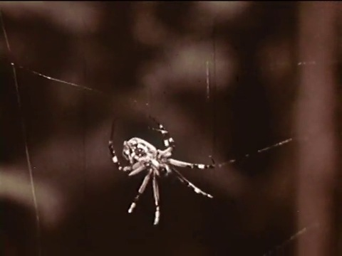
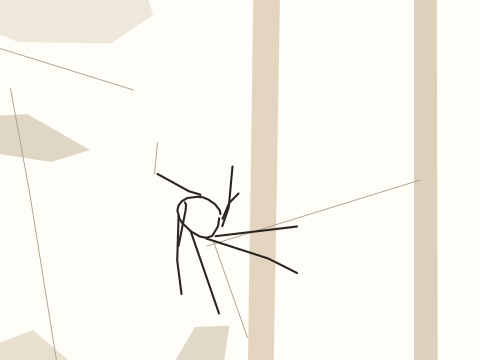
The compact spider hangs below the diagonal strand; lower legs extend.
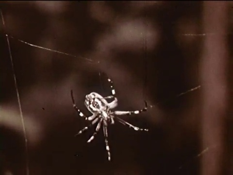
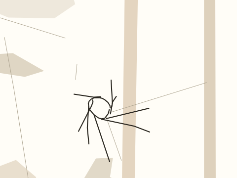
Right legs stretch while left legs begin a lateral sweep.
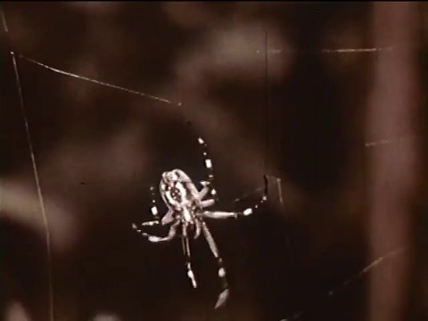
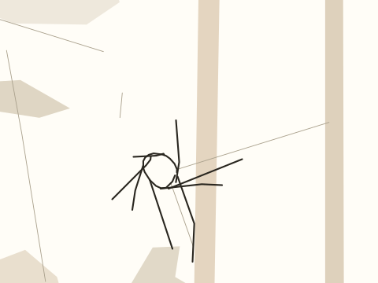
Body descends relative to web; lower right reach is longest.
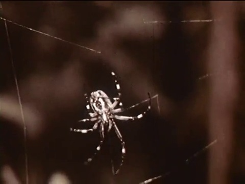
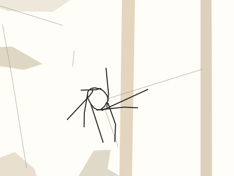
Body starts to rise within frame under the upward camera.
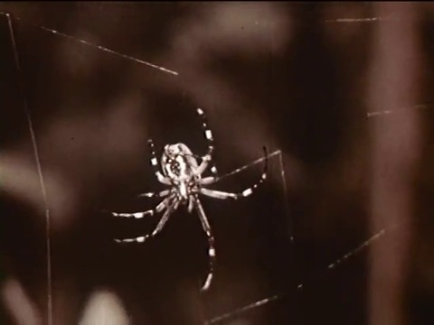
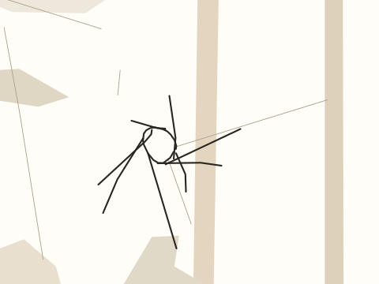
Lower-left legs fan outward as the right legs lift.
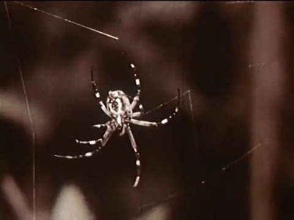
Upper-left limb reaches toward a strand; long lower limb releases.
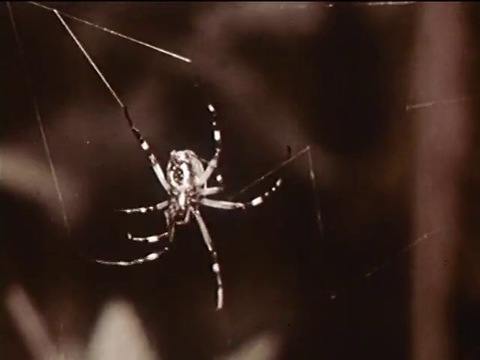
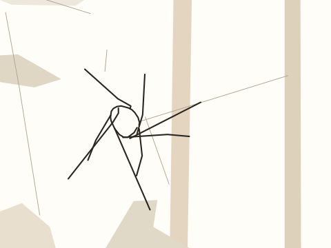
Upper-left limb is extended along web; body is lowest relative to background.
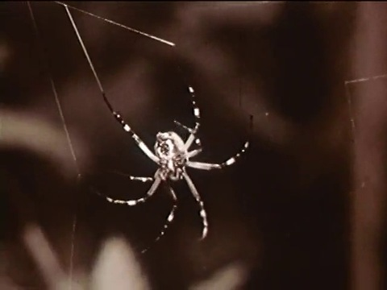
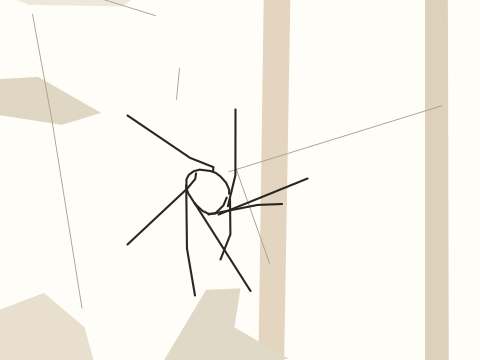
Body moves right in screen space; upper-left reach remains extended.
Drawing, footage and checks
Quick, Draw! spider key 5924220649340928. One open uneven body outline and eight leg strokes retain their original point correspondence. Quick, Draw! contributors / Google Creative Lab, CC BY 4.0.
Archive: Spider Engineers (1956). Retained clip-relative interval 6.000–9.000s. Archive reports public_domain; the record preserves that report without independent rights verification.
Camera comes from background-only optical flow. Macro stems and web strands are drawn once. The spider body and endpoints are observed at eight exact source frames; hidden leg identity and planted contact intervals remain unresolved. No procedural walk cycle replaces the source action.
Trace recall minimum 1.0000; all pieces retained 1.0000. Filled drawing/SAM IoU mean 0.2535, minimum 0.1754; gate fails. These partial masks do not verify contacts.
Timeline and editable strokes · Source record · Part correspondence · Checks · Measured fit · Character trace · SAM provenance · Mask inspection · Original doodle · Source contact sheet · Independent review 1


Classifier and independent normal-speed playback approval remain unrun. No training ran. This review copy is not an accepted training pair.